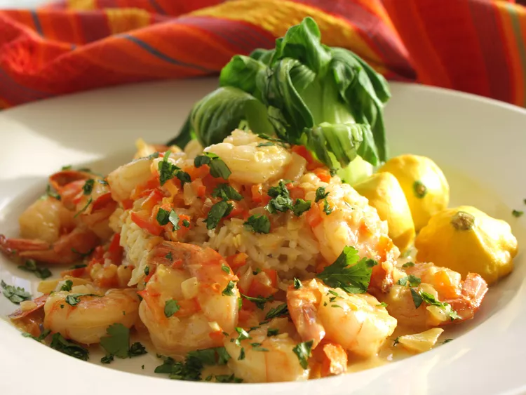

Curry Coconut Shrimp

Description:
This Coconut Shrimp Curry features a delicious shrimp in a lightly spiced,
creamy coconut curry sauce.
Ingredients:
- 1 teaspoon canola oil
- 1/2 cup minced onion
- 1/2 cup minced red bell pepper
- 1 clove minced garlic
- 1 teaspoon ground cumin
- 3/4 teaspoon ground coriander
- 1/2 teaspoon curry powder
- 1 cup light coconut milk
- 1 teaspoon sugar
- 1/4 teaspoon crushed red pepper flakes
- 1 pound peeled jumbo shrimp
- 1 tablespoon cornstarch
- 1 tablespoon water
- 2 tablespoons chopped fresh cilantro
Steps:
- In a large, nonstick saucepan, heat oil on a medium flame. Saute
onion, red pepper, and garlic for about 3 minutes.
- Season with cumin, coriander, and curry powder. Cook for 1
more minute. Stir in coconut milk, sugar, crushed red pepper flakes.
Bring to a boil. Reduce heat, simmer, uncovered for about 2 minutes.
- Add shrimp. Increase heat to medium high. Stir until cooked for about
4 minutes.